GitHub: Collaboration and Remote Repositories
Building on Git Basics, this tutorial covers using GitHub for hosting, collaboration, and project management.
Introduction to GitHub
GitHub is a web-based platform for hosting Git repositories. While alternatives exist (GitLab, Gitea, Forgejo), GitHub is the most widely used in open science and academia.
Benefits of GitHub: - Free public repositories (unlimited) - Issue tracking and project management - Pull request workflow for code review - CI/CD integration (GitHub Actions) - Community and discoverability - Educational benefits (GitHub Student Pack)
Getting Started with GitHub
Create an Account
- Go to github.com
- Sign up with your email
- Recommended: Use your institutional email for student/educator benefits
- Students
- Educators
Authentication
You need to authenticate to push code to GitHub. Choose one:
Option 1: HTTPS with Personal Access Token (easier for beginners)
- Go to Settings → Developer settings → Personal access tokens
- Create a fine-grained token with
reposcope - In the Permissions section check
Contentsand providereadandwriteaccess - Creating the token will give you a passkey (only appears once) that you can save to a safe place
- When
git pushprompts for password, use your token passkey
Option 2: SSH Keys (more secure long-term)
# Generate keys (if you don't have them)
ssh-keygen -t ed25519 -C "your.email@example.com"
# Add public key to GitHub
# Settings → SSH and GPG keys → New SSH key
cat ~/.ssh/id_ed25519.pub
Hands-On Example: Creating and Contributing to a Repository
Let's walk through a complete workflow together. You'll create a simple project, make changes on a feature branch, and merge it back to main using a Pull Request.
Step 1: Create a Repository on GitHub
- Click the + icon in the top right corner of GitHub
- Select New repository
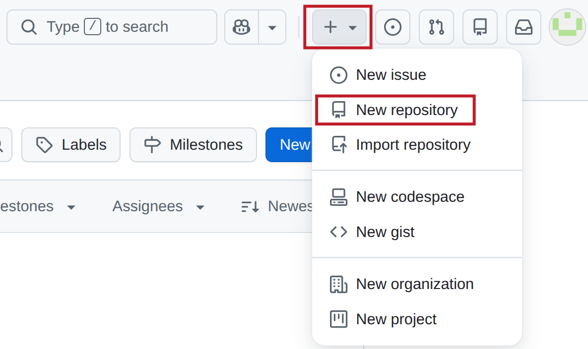
- Name your repository:
hello-github(use lowercase) - Add a description: "My test GitHub repository"
- Choose Public (so everyone can see it)
- Check the box: Add a README file
- Click Create repository
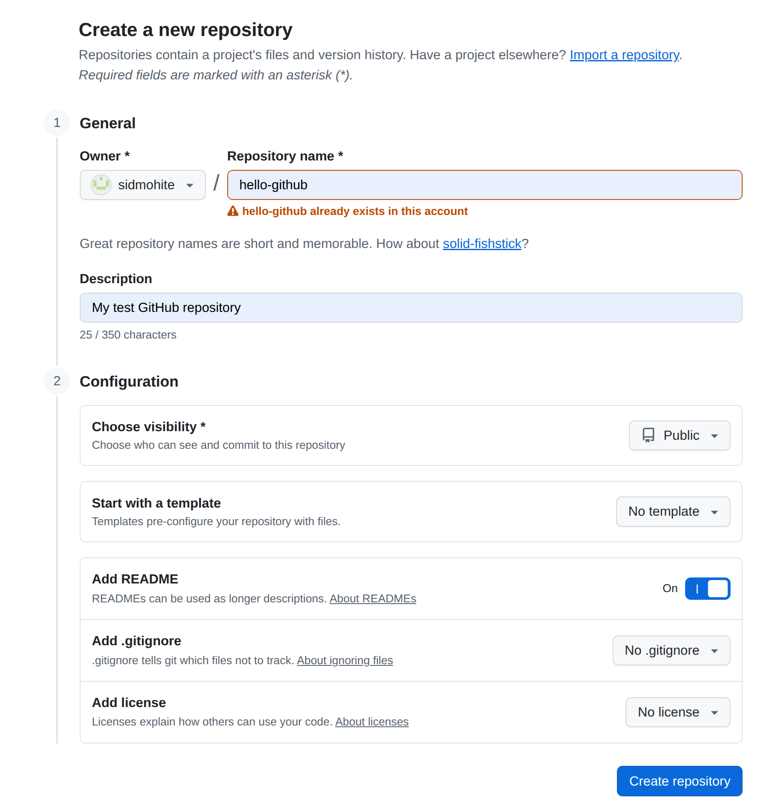
Congratulations! Your repository is now live at github.com/your-username/hello-github.
Step 2: Clone the Repository to Your Computer
Open your terminal and run:
git clone https://github.com/your-username/hello-github.git
cd hello-github
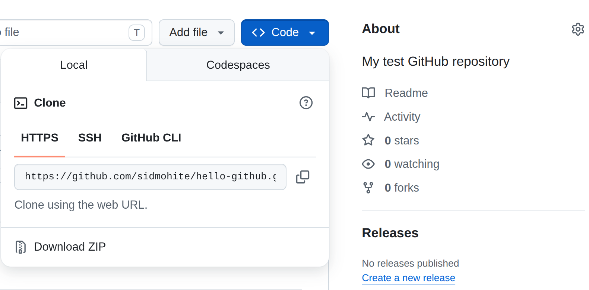
Configure Git to use SSH:
git remote set-url origin git@github.com:username/repo.git
Verify the repository is set up:
git remote -v # Shows that origin points to GitHub
Step 3: Make Your First Edit Locally
Create a simple Python script:
# Create a new file
cat > hello.py << 'EOF'
def greet(name):
"""A simple greeting function."""
return f"Hello, {name}!"
if __name__ == "__main__":
print(greet("World"))
EOF
Step 4: Create a Feature Branch
Never work directly on main. Instead, create a branch:
git checkout -b feature/add-greeting
Now verify you're on the new branch:
git branch # Shows you're on feature/add-greeting
Step 5: Commit and Push Your Changes
# Stage your changes
git add hello.py
# Commit with a descriptive message
git commit -m "feat: add greeting function"
# Push to GitHub
git push -u origin feature/add-greeting
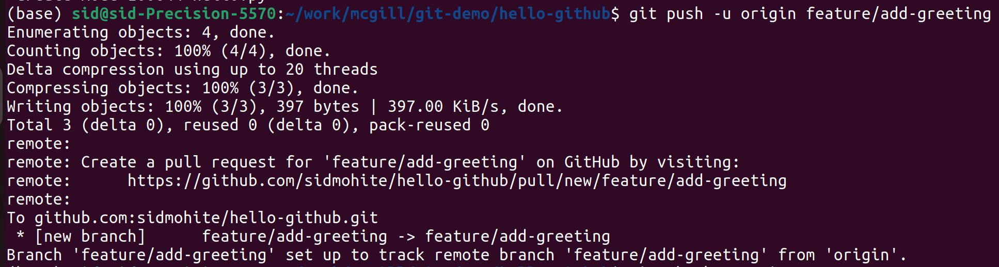
Step 6: Create a Pull Request
Go to your repository on GitHub. You'll see a notification about your new branch:
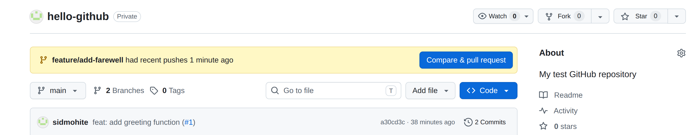
Click Compare & pull request. Fill in the PR form:
- Title: "Add greeting function"
- Description:
This PR adds a simple greeting function. ## Changes - Added greet() function - Added example usage
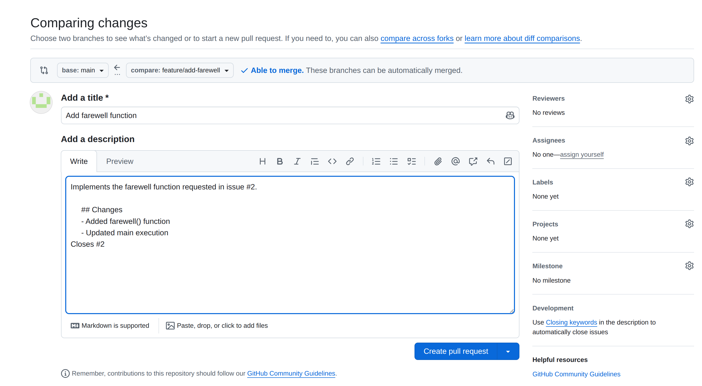
Click Create pull request.
Step 7: Review the Pull Request
Your PR page shows:
- The changes you made (blue = additions)
- A "Conversation" tab for comments
- A "Files changed" tab to review the diff

Click on the Files changed tab to see exactly what you modified:
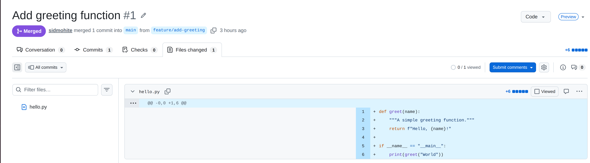
Step 8: Merge Your Pull Request
Once you're satisfied with your changes, merge the PR:
- Click the drop-down button next to Merge pull request
- Choose Squash and merge and click it (keeps history clean)
- Click Confirm squash and merge
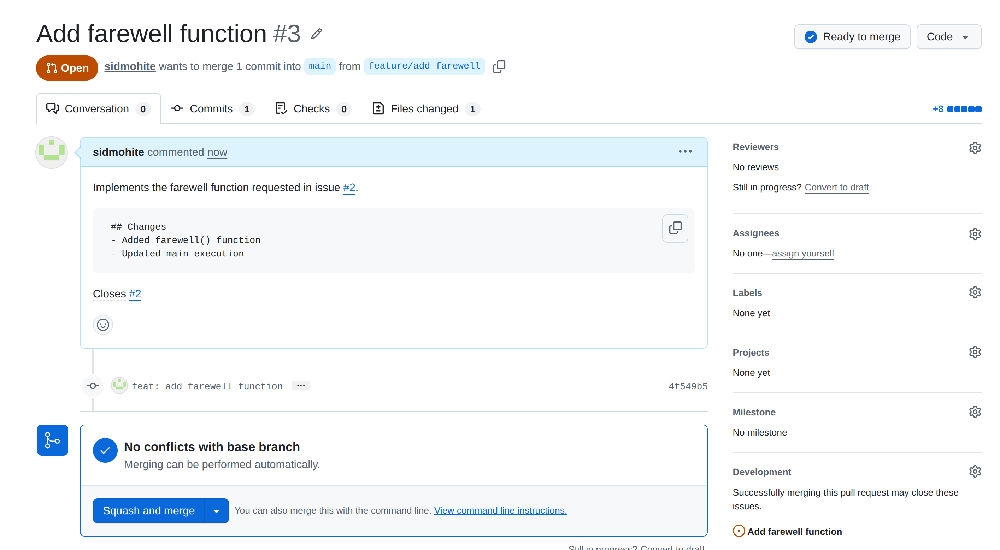
Your code is now on main! You can optionally delete the feature branch.
Step 9: Update Your Local Repository
Back on your computer, switch to main and pull the changes:
git checkout main
git pull origin main
Verify your file is there:
ls hello.py
python hello.py # Runs your script!
Step 10: Create an Issue to Track Future Work
Issues are how teams track bugs, feature requests, and tasks. Let's create one:
- Go to your repository on GitHub
- Click the Issues tab
- Click New issue
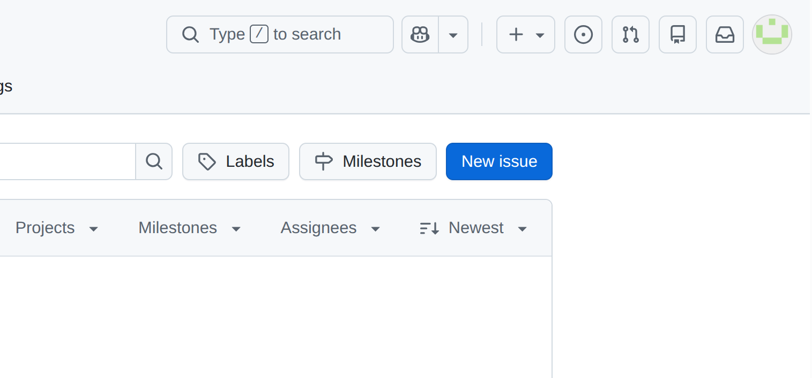
- Fill in the issue form:
- Title: "Add farewell function"
- Description:
We should add a farewell function to complement the greeting. ## Acceptance Criteria - Function returns a goodbye message - Follows the same style as greet() - Include example usage - Click Submit new issue
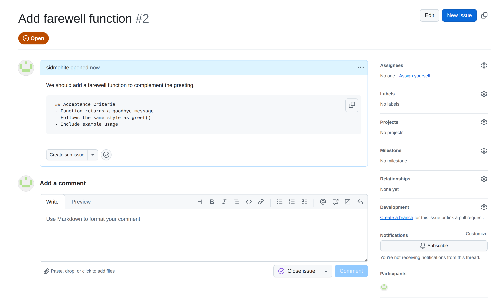
Notice GitHub assigns your issue a number (e.g., #2). You can now reference this in commits and PRs! Bonus point : Do you know why the issue gets assigned #2 and not #1?
Step 11: Create a Feature Branch Linked to the Issue
Create a new branch for this issue:
git checkout main
git pull origin main
git checkout -b feature/add-farewell
Now implement the farewell function:
cat >> hello.py << 'EOF'
def farewell(name):
"""A simple farewell function."""
return f"Goodbye, {name}!"
if __name__ == "__main__":
print(greet("World"))
print(farewell("World"))
EOF
Commit your changes referencing the issue number:
git add hello.py
git commit -m "feat: add farewell function
- Implement farewell() function
- Add to main execution
Closes #2"
The Closes #2 keyword tells GitHub to automatically close issue #2 when this PR is merged!
Push to GitHub:
git push -u origin feature/add-farewell
Step 12: Create a PR and Link It to the Issue
Go to GitHub and create a new PR:
- Click Compare & pull request
- Fill in:
- Title: "Add farewell function"
- Description:
Implements the farewell function requested in issue #2. ## Changes - Added farewell() function - Updated main execution Closes #2
- Click Create pull request
When you merge this PR, GitHub will automatically close issue #2!
Step 13: Enable Branch Protection Rules
Let's set up best practices to require code review before merging to main:
- Go to your repository → Settings tab
- Click Branches in the left sidebar
- Click Add classic branch protection rule under "Branch protection rules"
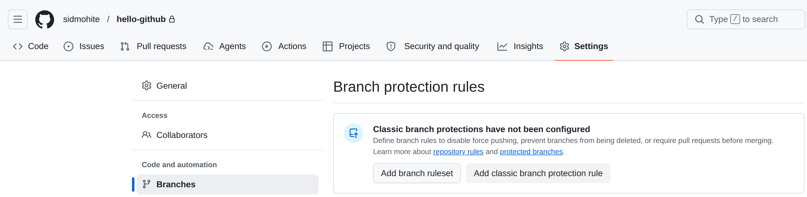
- Configure the rule:
- Branch name pattern:
main - Check: Require a pull request before merging
- Check: Require at least 1 approval
- Check: Dismiss stale pull request approvals
- Click Create
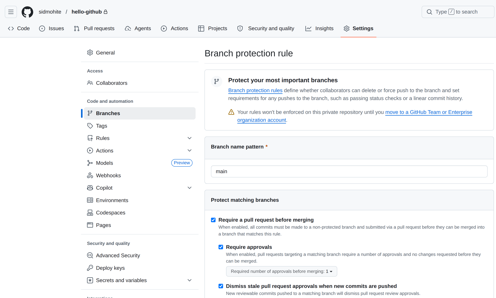
Now, direct pushes to main are blocked! All code must go through a PR with review.
Step 14: Collaboration - Forking and Contributing (Optional)
Want to contribute to someone else's project? Use fork workflow:
- Go to the repository you want to contribute to - https://github.com/sidmohite/hello-github-fork
- Click Fork in the top right
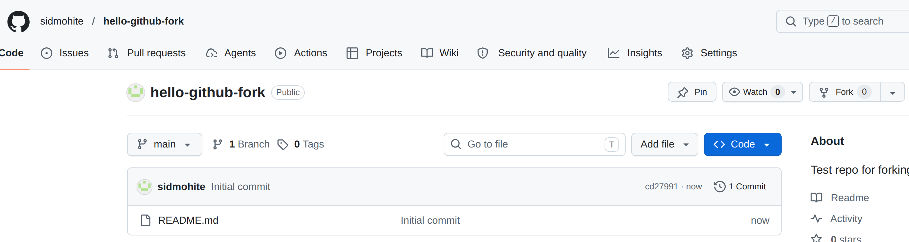
-
Clone your fork: Locally, change your directory to where you want to place this "forked" project and then
git clone https://github.com/your-username/hello-github-fork.git cd hello-github-fork -
Add upstream remote to track the original repo:
git remote add upstream https://github.com/sidmohite/hello-github-fork.git git remote -v # Verify you have both origin and upstream -
Create a feature branch and make changes:
git checkout -b fix/bug-fix # ... make changes ... git commit -m "fix: resolve issue with feature" git push origin fix/bug-fix -
On GitHub, click Compare & pull request to submit PR to the original repo
- Maintain your fork by pulling updates from upstream:
git fetch upstream git checkout main git merge upstream/main git push origin main
Step 15: Best Practices Checklist
Now that you've gone through the full workflow, here's what you should always follow:
✓ Always use feature branches
git checkout -b feat/description or fix/description
✓ Write clear, atomic commits
git commit -m "feat: concise description of change"
✓ Link commits to issues
Closes #42 or Fixes #1
✓ Require code review before merging (via branch protection) - Set in Settings → Branches → Add rule
✓ Use squash and merge for feature branches to keep history clean
- Keep main history readable
✓ Never force push to main
# Never do this on main:
git push --force origin main # ❌ Dangerous!
✓ Keep PRs focused and small - Easier to review - Easier to revert if needed - Fewer merge conflicts
✓ Add meaningful PR descriptions - Explain the "why", not just the "what" - Reference related issues - Include testing instructions
Key Concepts from This Workflow
✓ Branching: Separate branches protect the main code
✓ Commits: Each commit is a checkpoint with a clear message
✓ Issues: Track bugs, features, and tasks
✓ Pull Requests: A review gate before code reaches main
✓ Merging: Integrating changes with full history
✓ Branch Protection: Enforce code review requirements
✓ Forking: Contribute to projects you don't own
This workflow is the standard across industry and open source projects. Practice it repeatedly!
Summary
You now have the knowledge to effectively use GitHub for collaboration, code review, and project management. Practice these workflows in your own repositories!